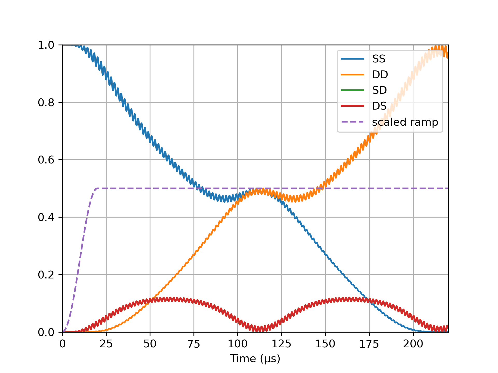

using IonSim
# Construct the system
C = Ca40(["S-1/2", "D-1/2"])
L1 = Laser(ϕ=π); L2 = Laser() # note the π-phase between L1/L2
chain = LinearChain(
ions=[C, C], com_frequencies=(x=3e6, y=3e6, z=2.5e5),
vibrational_modes=(;z=[1])
)
T = Trap(
configuration=chain, B=6e-4, Bhat=(x̂ + ẑ)/√2,
lasers=[L1, L2]
)
mode = T.configuration.vibrational_modes.z[1]
# Set the laser parameters
ϵ = 10e3
d = 350 # correct for single-photon coupling to sidebands
Δf = transition_frequency(T, 1, ("S-1/2", "D-1/2"))
L1.Δ = Δf + mode.ν + ϵ - d
L2.Δ = Δf - mode.ν - ϵ + d
L1.k = L2.k = ẑ
L1.ϵ = L2.ϵ = x̂
# set 'resonance' condition: ηΩ = 1/2ϵ
η = abs(get_η(mode, L1, C))
E = Efield_from_pi_time!(η/ϵ, T, 1, 1, ("S-1/2", "D-1/2"))
Ω = t -> t < 20 ? E * sin(2π * t / 80)^2 : E # ampl. ramp
L1.E = L2.E = t -> Ω(t)
# Build Hamiltonian
h = hamiltonian(T, lamb_dicke_order=1, rwa_cutoff=Inf)
# Solve
t, sol= solve(0:.1:220, C["S-1/2"] ⊗ C["S-1/2"] ⊗ mode[0], h)
|
import PyPlot
const plt = PyPlot
SS = expect(ionprojector(T, "S-1/2", "S-1/2"), sol)
DD = expect(ionprojector(T, "D-1/2", "D-1/2"), sol)
SD = expect(ionprojector(T, "S-1/2", "D-1/2"), sol)
DS = expect(ionprojector(T, "D-1/2", "S-1/2"), sol)
plt.plot(t, SS, label="SS")
plt.plot(t, DD, label="DD")
plt.plot(t, SD, label="SD")
plt.plot(t, DS, label="DS")
plt.plot(t, @.(Ω(t) / 2E), ls="--", label="scaled ramp")
plt.legend(loc=1)
plt.xlim(tout[1], tout[end])
plt.ylim(0, 1)
plt.xlabel("Time (μs)")

|